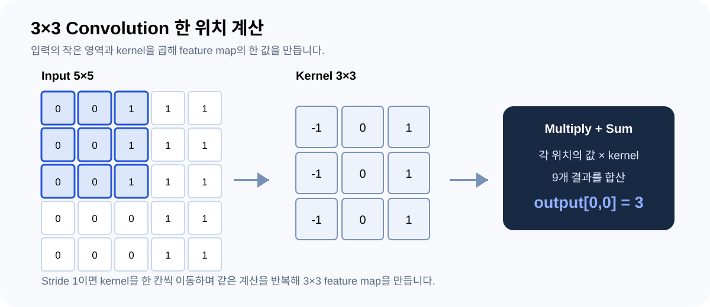
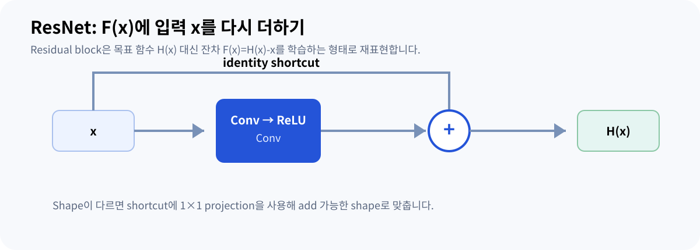

02 · CNN & RESNET
CNN: 합성곱에서 ResNet까지
합성곱·채널·수용영역을 이해한 뒤, 대표 CNN 아키텍처인 ResNet의 residual learning까지 연결합니다.
왜 작은 커널을 반복해서 사용할까?
CNN은 가까운 픽셀 사이의 패턴을 작은 커널 (Convolution kernel, 입력의 작은 영역에 반복 적용하는 학습 가중치)로 계산합니다. 같은 커널을 여러 위치에 적용하는 가중치 공유 덕분에 이미지의 모든 위치마다 별도 가중치를 둘 필요가 없습니다. 학습은 어떤 커널 값이 목적에 유용한지를 데이터로 조정하는 과정입니다.
Feature map은 “물체를 그린 지도”로 항상 해석할 수 있는 결과가 아닙니다. 특정 커널과 비선형 연산에 반응한 활성값의 공간 배열입니다. 초기 층에서 경계·방향 같은 반응을 볼 수 있지만, 모든 채널을 한 단어의 의미에 대응시킬 수는 없습니다.

3 × 3 합성곱을 손으로 계산하기
입력의 3 × 3 영역과 커널의 같은 위치를 각각 곱한 뒤, 9개 값을 더하고 bias를 더합니다. 딥러닝 라이브러리에서 흔히 합성곱이라고 부르는 연산은 커널을 뒤집지 않는 cross-correlation입니다.

커널이 이동하는 위치
INTERACTIVE입력 5 × 5 · 파란 영역이 현재 계산 범위
출력 3 × 3 · stride (커널이 한 번에 이동하는 칸 수) 1, padding (입력 가장자리에 값을 덧붙여 공간 크기를 조절하는 방법) 0, bias 0
수직 경계에 반응하는 고정 커널입니다. 실제 CNN에서는 대부분의 커널 값을 학습합니다.
첫 위치에서 각 행은 [0, 0, 1] · [−1, 0, 1] = 1이고, 세 행을 더하면 3입니다. 오른쪽 끝의 일정한 [1, 1, 1]은 −1 + 0 + 1 = 0이므로 경계가 없는 영역은 0이 됩니다.

채널은 어떻게 섞일까?
RGB 입력에 출력 채널 32개를 만드는 3 × 3 Conv를 사용하면 커널의 전체 shape는 [32, 3, 3, 3]입니다. 출력 채널 하나는 R·G·B 각각에 대한 계산을 합한 결과입니다. 일반적인 Conv에서 입력 채널마다 완전히 독립적인 최종 결과를 만드는 것은 아닙니다.
| 항목 | 수치 예시 | 설명 |
|---|---|---|
| 입력 | [B, 3, 224, 224] | 배치 차원은 공간 연산과 별도 |
| 가중치 | [32, 3, 3, 3] | 출력 채널 × 입력 채널 × 커널 높이 × 너비 |
| 파라미터 | 32 × 3 × 3 × 3 + 32 = 896 | groups=1, bias=True일 때 |
| 출력 | [B, 32, 224, 224] | stride=1, padding=1, dilation=1 |
1 × 1 커널은 인접 공간을 직접 섞지는 않지만 채널을 섞습니다. 입력 64채널을 출력 128채널로 바꾸면 위치마다 64차원 벡터를 128차원으로 변환합니다.

Stride · Padding · Receptive field
| 용어 | 하는 일 | 수치 예시 |
|---|---|---|
| Stride | 커널이 이동하는 간격 | 2이면 출력 공간 크기가 보통 약 절반 |
| Padding | 입력 주변을 확장 | 3 × 3, stride 1에서 padding 1이면 크기 유지 |
| Dilation | 커널 샘플 간격 확장 | 3 × 3, dilation 2의 유효 범위는 5 × 5 |
| Receptive field (한 출력 값이 영향을 받을 수 있는 입력 영역) | 한 출력이 영향을 받는 입력의 범위 | stride 1인 3 × 3 두 층은 이론상 5 × 5 |
수용영역은 층이 깊어지며 커집니다. 하지만 이론적으로 연결된 모든 픽셀이 동일한 영향력을 갖는 것은 아닙니다. 그리고 다운샘플링은 계산량을 줄이는 대신 작은 결함의 위치 정보가 약해질 수 있는 선택입니다.


왜 비선형 함수와 학습이 필요할까?
ReLU는 max(0, x)를 계산합니다. 예를 들어 [−2, 0.5, 3]은 [0, 0.5, 3]이 됩니다. 비선형성이 전혀 없다면 여러 선형 변환을 쌓아도 하나의 선형 변환으로 합칠 수 있어 표현력에 제약이 생깁니다.
분류 학습에서는 특징을 이용해 클래스별 logit을 만들고, 정답과 비교한 loss를 역전파합니다. 기울기는 각 가중치를 바꿨을 때 loss가 어떻게 변할지를 나타내며, optimizer가 이 정보를 사용해 파라미터를 갱신합니다. “경계를 찾는 필터”를 사람이 모두 지정하는 것이 아닙니다.
CNN은 공유 커널로 지역 패턴을 계산하고, 채널 변환과 비선형 함수를 반복하면서 목적에 맞는 특징을 학습합니다.

CNN 아키텍처는 무엇이 바뀌어 왔을까?
LeNet, AlexNet, VGG, ResNet은 모두 CNN 계열이지만 깊이만 늘어난 것이 아닙니다. 특히 VGG는 작은 3 × 3 convolution을 반복해서 쌓는 설계를 체계적으로 사용했고, ResNet은 더 깊은 CNN을 최적화하기 위해 residual (블록이 학습하는 F(x)=H(x)-x 형태의 잔차 함수) connection을 도입했습니다.
| 모델/아이디어 | 핵심 설계 | 이 주제에서 볼 포인트 |
|---|---|---|
| VGG | 3 × 3 Conv (Convolution, 합성곱 연산 또는 합성곱 층) 반복 | 작은 local kernel을 깊게 쌓아 receptive field와 비선형성을 늘림 |
| ResNet (Residual Network, residual connection을 사용하는 CNN architecture) | F(x)+x | 깊은 CNN의 optimization degradation을 완화 |
| Bottleneck ResNet | 1×1 → 3×3 → 1×1 | 비싼 3×3 연산 전후의 채널 수를 조절 |
ResNet은 CNN과 다른 종류의 모델이 아니라, convolutional feature extractor를 더 깊게 학습하기 위한 CNN architecture입니다.
ResNet 논문: 깊게 쌓았는데 training error가 커지는 문제
He et al.의 ResNet 논문은 단순히 “gradient vanishing을 해결했다”는 한 문장으로 요약하면 부정확합니다. 논문이 강조한 현상은 충분히 깊은 plain network에서 training error 자체가 더 나빠지는 degradation problem입니다. 이는 training error는 낮지만 validation/test 성능만 나빠지는 overfitting과 구분해야 합니다.
Residual block은 원하는 mapping H(x)를 직접 근사하는 대신 F(x)=H(x)-x를 학습하도록 재표현하고, 출력에서 입력을 더해 H(x)=F(x)+x를 만듭니다.

Residual block: F(x)와 identity shortcut

예를 들어 x=[2, −1], F(x)=[0.3, 0.2]라면 합산 전 activation은 [2.3, −0.8]입니다. 원 ResNet의 post-activation basic block처럼 합산 뒤 ReLU를 적용하는 경우 [2.3, 0]이 됩니다. Shortcut이 있다고 해서 출력이 항상 입력과 같다는 뜻은 아닙니다.
또한 ∂H/∂x에 identity term이 생긴다는 사실은 gradient가 지나갈 직접 경로를 설명하지만, 이것만으로 모든 깊은 모델의 optimization이 자동으로 해결된다고 해석해서는 안 됩니다.
Shape가 다르면 projection shortcut이 필요하다
원소별 덧셈을 하려면 두 branch의 shape가 같아야 합니다. 예를 들어 main branch가 [B,64,56,56] → [B,128,28,28]로 바뀌면 identity를 그대로 더할 수 없습니다. 이런 경우 projection shortcut에서 1 × 1 convolution과 stride를 사용해 shape를 맞출 수 있습니다.
| 경로 | 입력 | 변환 | 출력 |
|---|---|---|---|
| Main branch | [B,64,56,56] | stride-2 residual block | [B,128,28,28] |
| Shortcut | [B,64,56,56] | 1×1 Conv, stride 2 | [B,128,28,28] |
| Add | 동일 shape 두 텐서 | element-wise sum | [B,128,28,28] |
ResNet의 대표 shortcut은 element-wise add이고, 원 U-Net의 encoder–decoder skip은 channel-wise concatenate입니다. 둘 다 “skip connection”이지만 자료 구조가 다릅니다.

Bottleneck block: 1×1 Conv의 또 다른 역할
ResNet-18/34는 basic block을, ResNet-50/101/152는 bottleneck block을 사용합니다. Bottleneck에서는 1 × 1 convolution으로 채널을 줄인 뒤 3 × 3 공간 연산을 하고 다시 1 × 1로 채널을 확장합니다.
bias와 normalization parameter를 제외하면 이 예시의 convolution weight는 256×64 + 64×64×9 + 64×256 = 69,632개입니다. 같은 256 input/output channel의 3×3 convolution 하나는 589,824개입니다. 이 수치는 block 내부 연산량 감각을 위한 예시이며 전체 모델 성능을 직접 비교하는 숫자는 아닙니다.
ResNet 논문에서 실제로 확인한 범위
원 논문은 ImageNet에서 residual network를 최대 152 layers까지 실험하고 plain counterpart와 비교하며, residual formulation이 매우 깊은 network의 optimization을 쉽게 만든다는 실험 근거를 제시합니다. 따라서 “ResNet은 무조건 깊을수록 좋다”가 아니라, 깊이를 늘릴 때 생기던 optimization degradation을 residual learning으로 다룬다가 핵심입니다.
새로운 제조 데이터에 적용할 때는 입력 해상도, defect 크기, 사전학습, 데이터 수, latency를 별도로 평가해야 합니다. 논문의 ImageNet 결과를 다른 데이터셋의 성능 보장으로 옮겨 적으면 안 됩니다.
출처와 더 확인할 자료
본문은 이해를 위한 한국어 해설입니다. 도식은 직접 재구성했으며, 가상 수치와 단순화한 구조는 해당 위치에 표시했습니다.
- PyTorch · Conv2d ↗연산 정의, 가중치 shape, 출력 크기 공식의 기준입니다.
- PyTorch · ReLU (Rectified Linear Unit, 음수는 0, 양수는 그대로 두는 활성화 함수) ↗ReLU의 정의를 확인할 수 있습니다.
- He et al. · Deep Residual Learning for Image Recognition ↗CVPR 2016. degradation problem, residual block, bottleneck과 ImageNet 실험의 원문입니다.
- 저자 공식 구현 · KaimingHe/deep-residual-networks ↗원 연구의 모델 구현 자료입니다.
- Torchvision · ResNet ↗현대 PyTorch 구현과 사전학습 가중치의 공식 문서입니다.